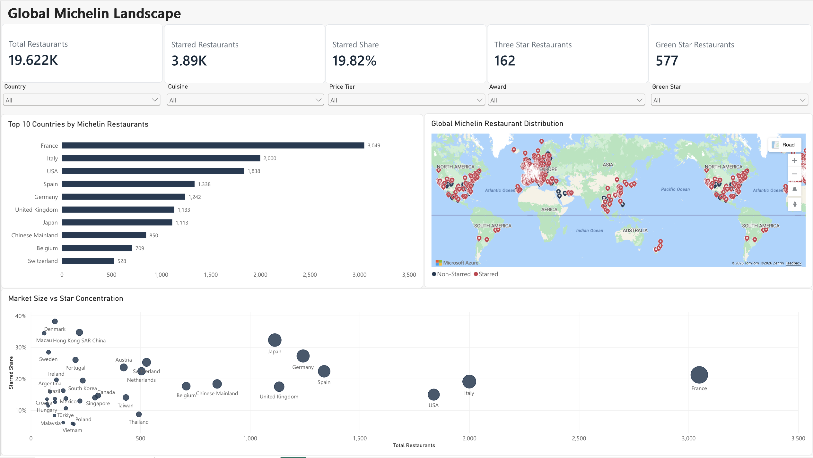
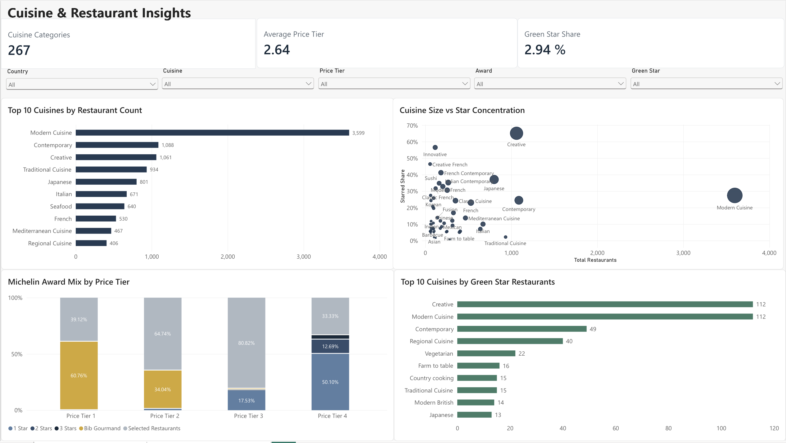

Turning 19,622 Michelin Guide restaurant records into an analytics-ready dataset and interactive business intelligence dashboard for exploring global markets, cuisines, pricing, awards, and sustainability recognition.
A high-level view of Michelin restaurant volume, starred restaurant concentration, geographic distribution, and differences across major global markets.

Built in Power BI using the analytics-ready Gold dataset from Databricks.
The project uses a medallion-style architecture to separate raw ingestion, transformation, quality validation, analytics modeling, and business intelligence.
359 of 1,113 Michelin-listed restaurants in Japan are starred, giving Japan one of the strongest star concentrations among major markets in the dataset.
691 of 1,061 restaurants categorized as Creative cuisine hold at least one Michelin star.
Only 577 of the 19,622 restaurants analyzed hold Green Star recognition in the dataset.
The second report page examines cuisine composition, star concentration, price tiers, Michelin award mix, and Green Star recognition in greater detail.

Built Bronze, Silver, and Gold layers in Databricks to separate raw data from standardized and analytics-ready data.
Standardized international price symbols, derived Michelin star indicators, structured geographic fields, and created a deterministic SHA-256 restaurant identifier.
Reconciled row counts and validated unique IDs, required fields, coordinates, price tiers, and Michelin star logic before promoting data to the Gold layer.
Connected the Gold dataset from Databricks to Power BI and built DAX measures, synchronized filters, geographic visualizations, and comparative market analysis.